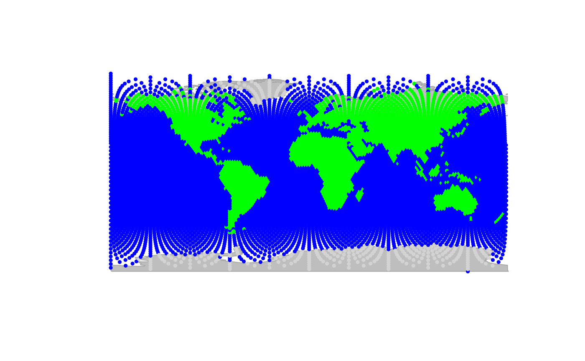
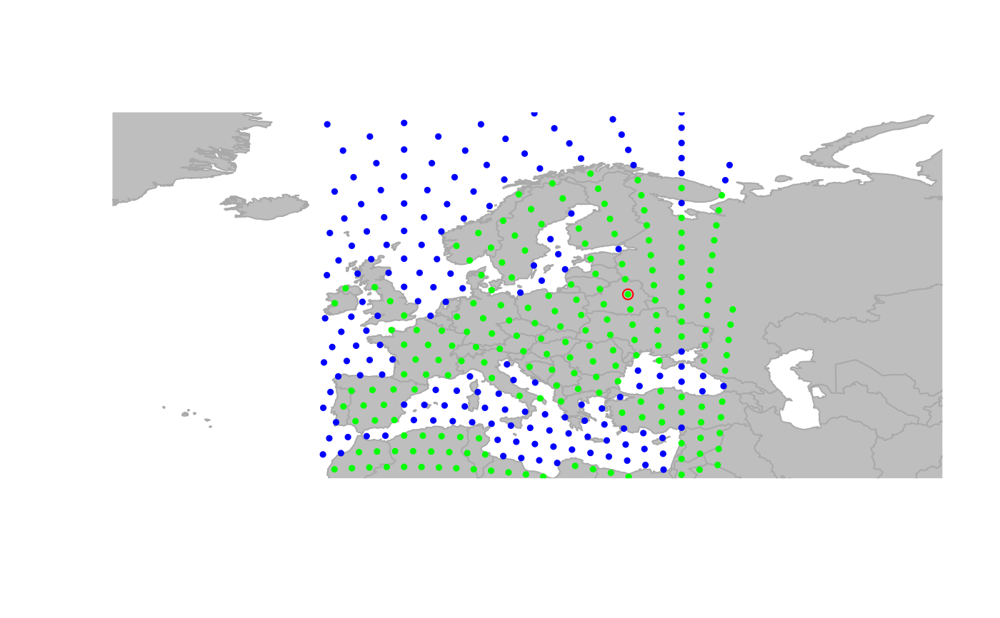
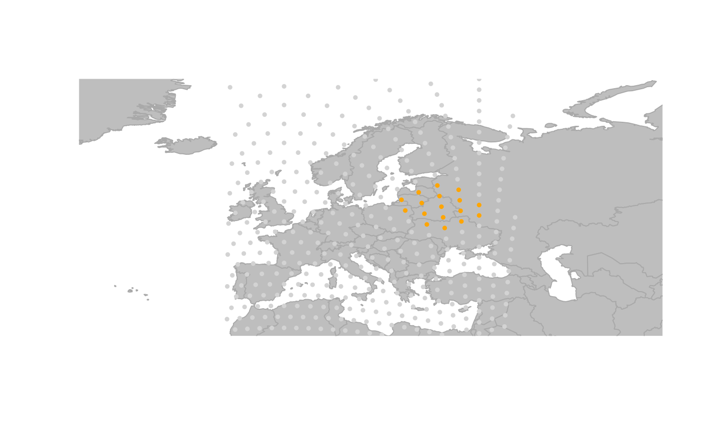
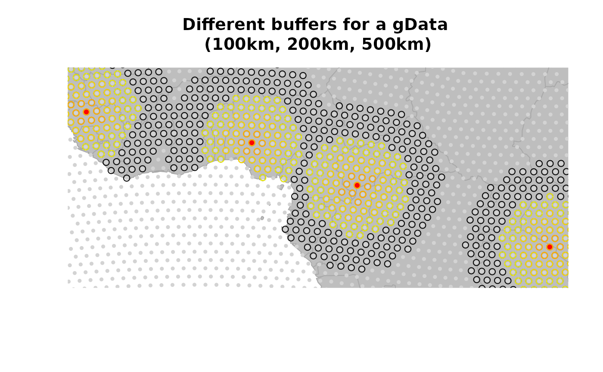

Compute buffers around locations for gGraph and gData objects
buffer.RdThe generic function buffer finds buffers around specified locations
of a gGraph or a gData object. Different format
for the output are available.
Details
The computed buffers are sets of nodes lying within a given distance of specified locations. All nodes of a buffer need to be connected to the location they surround.
Author
Thibaut Jombart (t.jombart@imperial.ac.uk)
Examples
#### gGraph example ####
## zoom in to an area
plot(worldgraph.10k, reset = TRUE)

geo.zoomin(list(x = c(-6, 38), y = c(35, 73)))
## identify one node
oneNodeXY <- c(getCoords(worldgraph.10k)[9299, 1], getCoords(worldgraph.10k)[9299, 2])
points(oneNodeXY[1], oneNodeXY[2], col = "red")

## find some buffers
buffer(worldgraph.10k, "9299", 100) # nothing around 100km
#> [1] "9299"
buffer(worldgraph.10k, "9299", 500)
#> [1] "9299" "8979" "9619" "9300" "9298" "8978" "9620" "8980" "8658" "9618"
#> [11] "9940" "9301" "9621" "9297" "8977" "8657" "9941"
buf500km <- buffer(worldgraph.10k, "9299", 500, res = "gGraph")
plot(buf500km, col.rules = buf500km@meta$buf.colors)

buf1000km <- buffer(worldgraph.10k, "9299", 1000, res = "gGraph")
plot(buf1000km, col.rules = buf1000km@meta$buf.colors)
#### gData example ####
x <- hgdp[27:30] # retain a subset of hgdp
plot(x, reset = TRUE, col.g = "lightgrey", pch.node = 20)
buf.200 <- buffer(x, 200, res = "gData")
buf.400 <- buffer(x, 400, res = "gData")
buf.600 <- buffer(x, 600, res = "gData")
buf.1000 <- buffer(x, 1000, res = "gData")
points(buf.1000, col.node = "black")
points(buf.600, col.node = "yellow")
points(buf.400, col.node = "gold")
points(buf.200, col.node = "orange")
title("Different buffers for a gData \n(100km, 200km, 500km)")
